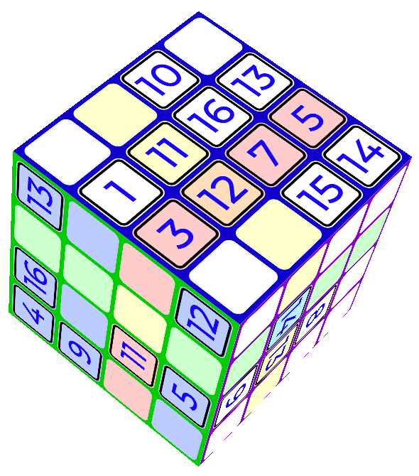

How to play 3Doku
3Doku is a classic sudoku wrapped around a cube, although unlike a classic sudoku it uses the numbers 1-16 rather than 1-9.
Each face of the solved cube contains each of the numbers 1-16, and like a classic sudoku there are also "rows" and "columns" which contain the numbers 1-16.

Look at the rows and columns within each face, and follow them over the edge onto the next face, wrapping all the way around the cube until you get back to the first face. If you need help with this, select the 'pen' tool and click a cell on the cube — the groups its in will be highlighted.
You should also check out my word-based puzzle, Cell Tower!
3Doku © 2023 @Andrew_Taylor. Font is Montserrat.